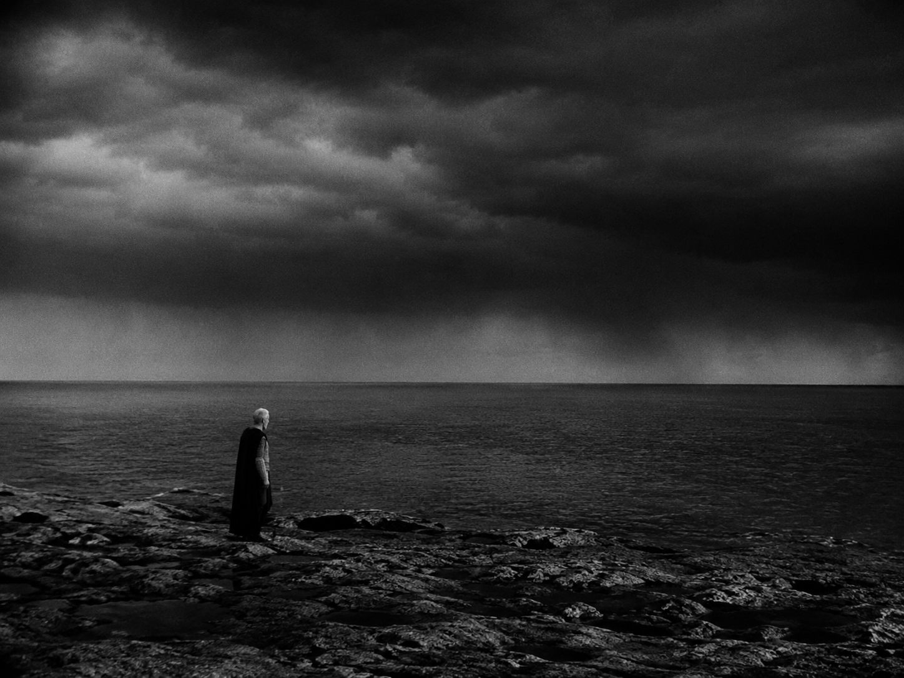
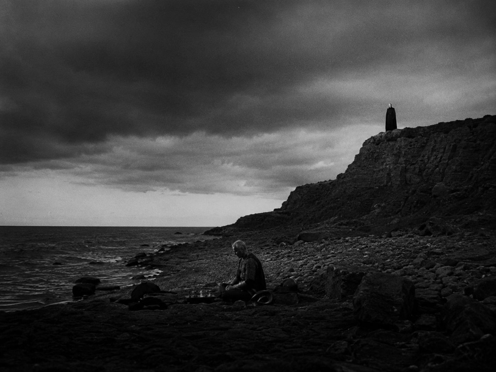
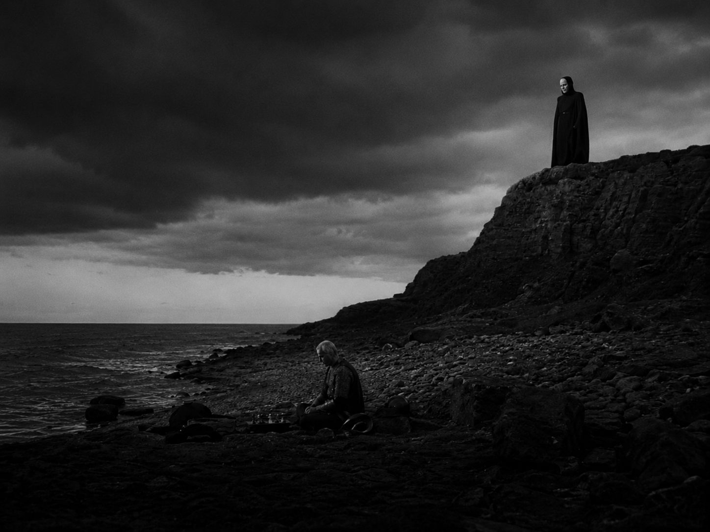
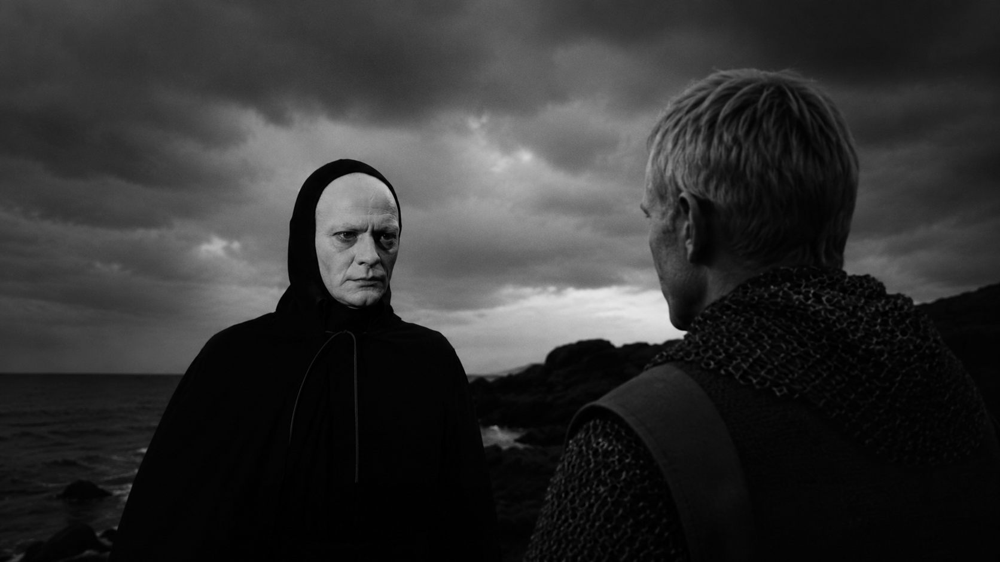
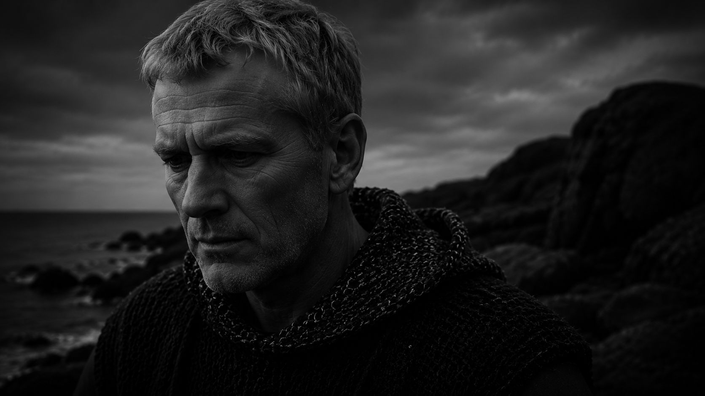
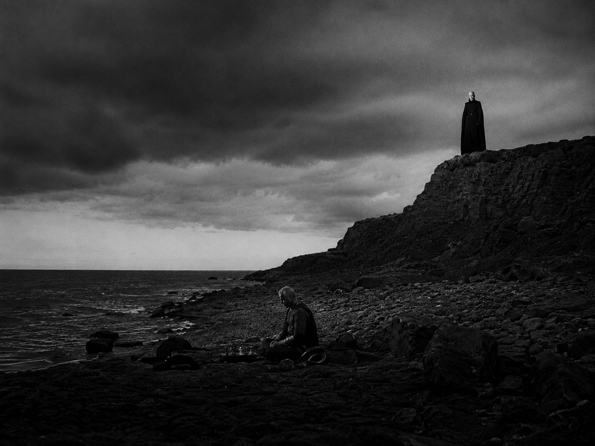
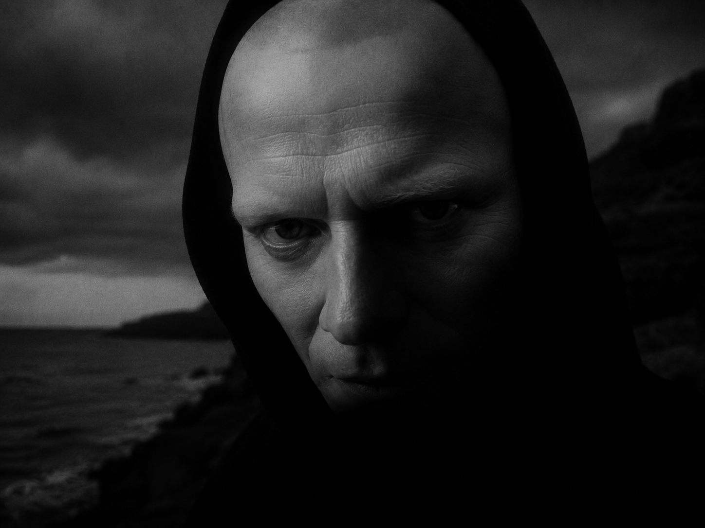
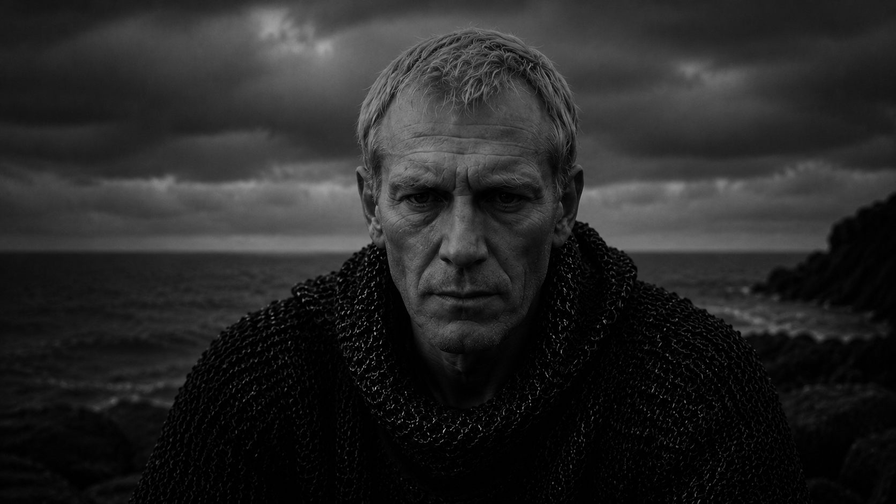
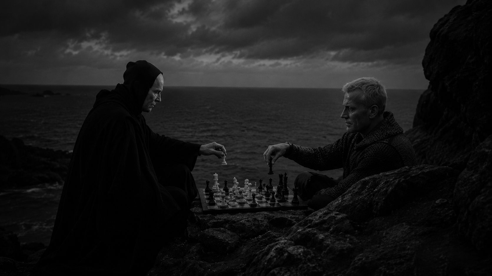

The Knight Who are you?


Death I am Death.

The Knight Have you come for me?

Death I have been walking beside you for a long time.
The Knight I know.

Death Are you ready?

The Knight My body is afraid. I am not.

Death does not arrive. It has always been near.
The Seventh Seal
1957
Ingmar Bergman
The body fears. The self stands.